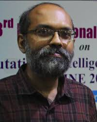
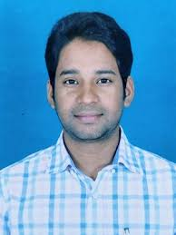

Prof. Amit Sheth
University of South Carolina, USATitle of Talk : On Exploiting Multimodal Information for Machine Intelligence and Natural Interactions - with examples from Health Chatbots
Brief Abstract : The Holy Grail of machine
intelligence is the ability to mimic the human brain. In computing, we
have created silos in dealing with each modality (text/language
processing, speech processing, image processing, video processing,
etc.). However, the human brain’s cognitive and perceptual capability
to seamlessly consume (listen and see) and communicate
(writing/typing, voice, gesture) multimodal (text, image, video, etc.)
information challenges machine intelligence research. Emerging
chatbots for demanding health applications present the requirements
for these capabilities. To support the corresponding data analysis and
reasoning needs, we have explored a pedagogical framework consisting
of semantic computing, cognitive computing, and perceptual computing.
In particular, we have been motivated by the brain’s amazing
perceptive power that abstracts massive amounts of multimodal data by
filtering and processing them into a few concepts (representable by a
few bits) to act upon. From the information processing perspective,
this requires moving from syntactic and semantic big data processing
to actionable information that can be weaved naturally into human
activities and experience.
Exploration of the above research agenda, including powerful use
cases, is afforded in a growing number of emerging technologies and
their applications - such as chatbots and robotics for healthcare. In
this talk, I will provide these examples and share the early progress
we have made towards building health chatbots that consume
contextually relevant multimodal data and support different
forms/modalities of interactions to achieve various alternatives for
digital health. I will also demonstrate the strong role of domain
knowledge and personalization using domain and personalized knowledge
graphs as part of various reasoning and learning techniques.
Speaker's Bio : Prof. Amit Sheth (Home Page,
LinkedIn) is an Educator, Researcher, and Entrepreneur. He is the
founding director of the AI Institute (#AIISC) at the University of
South Carolina. Current areas of his translational research include
knowledge-infused learning, explainable AI, and applications to
personalized and public health, biomedicine, social good and
preventing social harm, manufacturing, disaster management, and other
domains. He is a fellow of the IEEE, AAAI, AAAS, and ACM. His awards
include IEEE TCSVC Research Innovation Award, Trustee Award, 10-year
award (Intl Semantic Web Conf), OSU Franklin College Alumni award, and
Ohio Faculty Commercialization Award (runner up). For several years
through 2018, he was listed among the top 100 most cited computer
scientists. Three of the four companies he has (co)founded involves
licensing his university research outcomes, including the first
Semantic Web company in 1999 that pioneered technology similar to what
is found today in Google Semantic Search and Knowledge Graph, and the
fourth company (http://cognovilabs.com) at the intersection of emotion
and AI. He is particularly proud of his ~45 Ph.D. students’ and
postdocs’ exceptional success in academia, industry research labs, and
as entrepreneurs.
Prof. Sung-Bae Cho
Yonsei University, South KoreaTitle of Talk : How to Exploit Deep Learning for Multimedia Applications
Brief Abstract :
Deep learning opens another renaissance of artificial intelligence
that is a long dream of human-beings. It gives us a great opportunity
to handle the difficult problems in many applications including
multimedia. In order to be successful in practical applications of
deep learning, we need to make use of several models together. In this
talk, I will give the key idea of deep learning models, and present a
generative model via an adversarial process that shows the amazing
demonstration of performance for multimedia. It can simultaneously
train a generative model to capture the data distribution, and
discriminative model to estimate the probability that a sample came
from the training data. In addition, I will explain several techniques
to exploit the latent space inside deep learning models. Latent space
in a deep learning model provides an important representation on the
problem at hand, which propels efficient data analysis and creative
application. In order to verify them, we present three applications
such as predicting electric power demand, detecting malware for cyber
security, and detecting anomalies in video sequences: 1) the
state-explainable autoencoder for encoding power demand up to the
present and transcribing them into the latent space, 2) the latent
space predefined with a mixture of multivariate Gaussian distribution
for enhancing the performance of malware generation and detection, and
3) an adversarial autoencoder for detecting various outliers in the
surveillance video.
Speaker's Bio :
Sung-Bae Cho received the B.S. degree in computer science from Yonsei
University, Seoul, Korea and the M.S. and Ph.D. degrees in computer
science from KAIST (Korea Advanced Institute of Science and
Technology), Taejeon, Korea. He was an invited researcher of Human
Information Processing research laboratories at ATR (Advanced
Telecommunications Research) Institute, Kyoto, Japan from 1993 to
1995, and a visiting scholar at University of New South Wales,
Canberra, Australia in 1998. He was also a visiting professor at
University of British Columbia, Vancouver, Canada from 2005 to 2006.
Since 1995, he has been a Professor in the Department of Computer
Science, Yonsei University. His research interests include neural
networks, pattern recognition, intelligent man-machine interfaces,
evolutionary computation, and artificial life. Dr. Cho was awarded
outstanding paper prizes from the IEEE Korea Section in 1989 and 1992,
and another one from the Korea Information Science Society in 1990. He
was also the recipient of the Richard E. Merwin prize from the IEEE
Computer Society in 1993. He was listed in Who's Who in Pattern
Recognition from the International Association for Pattern Recognition
in 1994, and received the best paper awards at International
Conference on Soft Computing in 1996 and 1998. Also, he received the
best paper award at World Automation Congress in 1998. He is a Senior
Member of IEEE and a Member of the Korea Information Science Society,
the IEEE Computational Intelligence Society, and the IEEE Systems,
Man, and Cybernetics Society.
Prof. Ashish Ghosh
ISI KolkataTitle of Talk : Multimedia and their applications
Brief Abstract : Multimedia is multiple medium of
communication. It is anything that we watch and listen. In this
lecture, starting from components of multimedia, the hardware and
software requirements of multimedia to few other concepts like
Multimedia Development phases will be presented. The application of
Multimedia can be seen in every field now-a-days due to the
technological advancements. So how multimedia is becoming beneficial
in every field has been explained using various real-life examples and
applications that we use on daily basis. Also few technology used
behind multimedia based applications have been explained starting from
video conferencing to the technology used behind Amazon Alexa
Prof. Rahul Banerjee
LNMIIT, JaipurTitle of Talk : Privacy and Security Challenges in Internet-based Multimedia Systems and Services
Speaker's Bio :
Professor Rahul Banerjee is the Director of the LNMIIT Jaipur where he
is also a Professor of Computer Science & Engineering. His research
and teaching interests lie in the areas of Network Protocol
engineering, QoS-Enabled Routing, Wearable Computing, , Intelligent
Software Systems and Cyber-Physical Systems. He has led and
participated in several funded research projects including those
funded by European Commission in the area of Next Generation
Networking involving IPv6, Govt. of India in the area of
Technology-enabled Learning, Govt. of France in the area of
IPv6-enabled Low-Power Wireless Sensor Networking. He had also served
as the head of the European Commission-supported Next Generation
Network Initiatives’s Quality of Service research group under the
FP-5. He has been a reviewer for the IEEE Transactions on Computers,
IEEE Internet Computing, IEEE Communications, IEEE Transactions on
ITS, Elsevier's Pattern Recognition Letters and Biomedical Signal
Processing and the IISc Journal etc. He has also served on a Technical
Committees of IEEE and the Bureau of Indian Standards (BIS). Prior to
joining the LNMIIT, he was with BITS Pilani for about two decades in
various roles, both academic and leadership. He is a Fellow of the
Institution of Engineers, a Fellow of the IETE, a Senior Member of the
IEEE, a Member of the ACM and ISoc and a Life Member of ISTE and ISCA.
Prof. Susmita Ghosh
Jadavpur University, KolkataTitle of Talk : Evolutionary Algorithms: What, How andWhere
Brief Abstract : In the context of artificial
intelligence (AI), an evolutionary algorithm (EA) is considered as a
generic population-basednature inspired search and optimization
method. An EA is an adaptive computational procedure modelled on the
mechanics of natural evolution. Taking inspiration from biological
evolution, the method uses selection, crossover and mutation as
operators. Candidatesolutions to the optimizationproblem play the
role of individuals in a population, and the fitness(objective)
function determines the quality of the solution. Evolution of the
population takes place by repeating above mentioned operators till
termination. Evolutionary algorithms often perform well approximating
solutions to all types of (search) problems because they ideally do
not make any assumption about the underlying fitnesslandscape . EAs
can also be extended for many-objective framework where the aim is to
simultaneously optimize several conflicting objectives, e.g.,
travelling distance, time, cost, comfort, risk etc. Under
multi-objective framework no single point is considered as an optimal
solution; rather, the optimal solution can only be a set of
non-dominated and trade-off ones. In the present lecture initially an
introduction will be given on evolutionary algorithms (EAs). This will
be followed by the applicability of EAs in solving various complex
real life problems, mostly NP-hard (e.g., Knapsack problem,
Classification, Clustering, Image Enhancement etc.), with special
emphasis on Traveling Salesman Problem (TSP) under multi-objective
scenario.

Dr. Kuntal Ghosh
ISI KolkataTitle of Talk : E-LEARNING FOR ENHANCED ACCESSIBILITY OF THE HEARING IMPAIRED CHILDREN
Brief Abstract : Hearing-impaired (HI) children are
often found to lag behind in language comprehension. It was observed
in a survey conducted in and around the city of Kolkata, India, that
HI children consequently face difficulties in understanding arithmetic
word problems as well. This survey, and the statistical analysis of
its outcome, constitutes the first part of this lecture. The second
part deals with a possible remedy for the problem. To this end, a new
assistive technology-based app on Android platform is being developed
and constructed to help speech-impaired and HI persons to improve the
depth and breadth of vocabulary knowledge in Indian Sign Language
(ISL). This, we suggest, will be highly effective through the learning
of relevant antonyms along with synonyms, and mapped into semantic
connotation via sign inputs to recognize the symbols, in absence of
sound through some visual clues (Sign Video).
Dr. Neeta Nain
MNIT, JaipurTitle of Talk : Support Vector Machines
Brief Abstract :
Support Vector Machines are supervised learning models that primarily
analyze data for binary classification (can be extended to
multiclass). Developed in 1992 at AT &T Bell Labs by Boser, Guyon and
Vapnik et al. An SVM maps training examples to points in space such
that it maximises the width of the margin between the two classes. New
examples are then mapped into that same space and predicted to belong
to a class based on which side of the margin they fall.
In this leacture we will learn linear classification: Given a set of
training examples, each marked as belonging to one of tthe wo classes,
how to build a maximum margin hyperplane that assigns new examples to
one class or other for linearly separable data. This will be followed
by extending it for separating non-linear data using the Kernel trick.
Hands on examples will be solved for better understanding of SVM
classifier.
Speaker's Bio :
Dr. Neeta Nain, presently working as Associate Professor, in the
Department of Computer Science and Engineering, Malaviya National
Institute of Technology Jaipur, has a teaching experience of over 25
years. Her research area is Pattern Recognition, Machine Learning and
Biometrics. She has published more than seventy papers on these topics
for various International Journals and conferences like Elsevier
Pattern Recognition, Elsevier Journal of Visual Comm. Infor.
Representation, ACM Transactions on Asian Language Information
Processing, IETE Journal of Research, Springer Multimedia Tools and
Applications, The Visual Computer, Artificial Intelligence Review,
IEEE Computer Magazine etc. Dr. Nain has acted as Program Chair, for
The 13th, 14th and 15th IEEE International Conference on SIGNAL IMAGE
TECHNOLOGY & INTERNET BASED SYSTEMS(SITIS2017, SITIS2018, SITIS2019).
The last one was held at Sorrento Italy. She was also Program Chair,
of the Fourth IAPR Endorsed International Conference on Computer
Vision and Image Processing, CVIP2019 held at MNIT Jaipur. She is
member of various professional bodies like IEEE, IAPR, BMVC etc. She
has several sponsored Research projects under her supervision
including the one she is talking about today - Child Face Age
Progression and Regression to Trace Missing Children, sponsored by
Ministry of Electronics and Information Technology, Govt. of India.
Dr. Badri Narayan Subudhi
IIT JammuTitle of Talk : Underwater Visual Surveillance
Brief Abstract :
Intelligent under water surveillance is one of the most active
research areas in computer vision. The aim is to uncover hidden
patterns, unknown correlations and other useful information that can
be used to make better decisions for designing a surveillance system
for analyzing underwater movements. Researchers are urged to develop
intelligent systems to efficiently extract information from under
water data. Analyzing the data generated from a single or multiple
camera source are large in nature again they contains several complex
scenarios and needs a lot of effort for processing in real time
environment. The different difficult situations may include:
non-static background, occluded environmental condition, haze in
water, poor visibility, etc. where videos are recorded for a longer
duration and processing them is challenging for underwater
surveillance applications. The objective of this talk is to present
some intelligent based surveillance system (with computer vision based
approaches), which will be able to detect and track moving objects
from underwater video data.
Speaker's Bio :
Dr. Badri Narayan Subudhi received M.Tech. in Electronics and System
Communication from National Institute of Technology, Rourkela, India,
in 2008-09. He worked for his PhD from Machine Intelligence Unit,
Indian Statistical Institute, Kolkata, India in year 2014 (degree from
Jadavpur University). Currently he is serving as an Assistant
Professor at Indian Institute of Technology Jammu, India. Prior to
this he was working as an Assistant Professor at NIT Goa from July
2014 to March 2017. He received CSIR senior research fellowship for
the year 2011- 2015. He was nominated as the Young Scientist Awardees
by Indian Science Congress Association for the year 2012-2013. He was
awarded with Young Scientist Travel grant award from DST, Government
of India and Council of Scientific and Industrial Research, India in
the year 2011. He is the receiptant of Bose-Ramagnosi Award for the
year 2010 from DST, Government of India under India-Trento Programme
for Advanced Research (ITPAR). He was a visiting scientist at
University of Trento, Italy during Aug. 2010 to Feb 2011. He is a
Senior Member at IEEE and life member IUPRAI. His research interests
include Video Processing, Image Processing, Medical Image Processing,
Machine Learning, Pattern Recognition, and Remote Sensing Image
Analysis. He has published 50 research papers in reputed journals and
conferences.

Dr. Ankit Dubey
IIT JammuTitle of Talk : PHY-MAC Protocols for M-IoT
Brief Abstract :
The ever increasing demand for more and more data from things for a
variety of applications has created a new era of the connected
devices, we call it the Internet of Things (IoT). Understanding the
basics of IoT and challenges involved may open up a treasure of
research problems and their solutions will generate new applications.
Multimedia IoT is power hungry and demands more bandwidth. Managing
millions of such devices pose a challenge in MAC and PHY layers. In
this talk, we will start from the basics of IoT and discuss the
challenges in MAC PHY layers. We will then discuss some of the latest
solutions for the same.
Speaker's Bio :
Ankit received the B.E. degree in Electronics and Telecommunication
Engineering from the Chhattisgarh Swami Vivekanand Technical
University (CSVTU), Bhilai-India in 2009 and the Ph.D. degree in
Electrical Engineering from the Indian Institute of Technology (IIT),
Delhi-India in 2014. In 2012 and 2013, he was a visiting research
scholar at the University of British Columbia, Vancouver, Canada. From
July 2014 to December 2014 he has been a research associate with IIT
Delhi. From December 2014 to Dec 2018, he has been with the faculty of
the Department of Electronics and Communication Engineering, National
Institute of Technology (NIT), Goa-India, where he was an Assistant
Professor. Since January 2019, he has been with the faculty of the
Department of Electrical Engineering, Indian Institute of Technology
(IIT), Jammu-India, where he is currently an Assistant Professor and
Head of the Department. He has published several journal and
conference papers in the area of communications engineering. He has
several govt. of India sponsored projects worth 15 Millions INR. His
research interests are in diversity combining, multi-hop transmission,
and physical layer security, PLC, IoT, and wireless communications. He
works in the application side for smart grid communications,
automation, etc.
Prof. Satish Kumar Singh
IIIT AllahabadTitle of Talk : Deep Learning model for face recognition under surveillance settings.
Speaker's Bio : Dr. Satish Kumar Singh is with the
Indian Institute of Information Technology Allahabad India, as an
Associate Professor at the Department of Information Technology from
2013. Before joining the IIIT Allahabad, he served the Department of
Electronics and Communication Engineering, Jaypee University of
Engineering and Technology Guna, India from 2005 to 2012. He is having
about 15+ years of academic and research experience in various
capacities. Presently he is heading the Computer Vision and Biometrics
group and in-charge of the Computer Vision and Biometrics Lab (CVBL)
at IIIT Allahabad from 2015 onwards. His group is involved in the
research and development of the Signal & Image Processing, Vision, and
Biometrics algorithms and system. His areas of interest include Image
Processing, Computer Vision, Biometrics, Deep Learning, and Pattern
Recognition. He has vast experience of research supervision and
supervised 5 PhDs and 30 Master's students in his research career and
presently 9 Ph.D. and 4 Master Students are doing research under his
supervision. Dr. Singh and his group has published about 60 research
articles till date in various IEEE/ACM transactions and Journals and
International conferences of repute. He is the principal investigator
and co-principal investigator for various research projects funded
from various government funding agencies i.e. Ministry of Defense,
Human Resource Development, and Home Affairs Government of India. Dr.
Singh is holding various positions to name a few, Local Coordinator,
Global Initiative of Academic Network by MHRD, Government of India,
Nodal Officer Scheme for Promotion of Academic and Research
Collaboration, MHRD, Convener- Departmental Postgraduate Committee,
and Faculty I/C Ranking and Accreditation. Dr. Singh is actively
involved in academic and research outreach activities. Besides being a
reviewer of many reputed IEEE and ACM Transactions, he is presently
serving as Associate Editor IET Image Processing, Associate Editor
International Journal of Pattern Recognition and Artificial
Intelligence, Lead Guest Editor of Special Issue of Springer's Neural
Computations and Applications on Computer Vision and Image Processing,
Guest Editor of Special Issues of Springer's Nature Computer Science
on Recent Trends in Computer Vision, Guest Editor of Special Issues of
Springer's Nature Computer Science on Progress in Image Processing.
Dr. Singh is also pro-actively offering his services as a true IEEE
Volunteer for the last many years in various capacities. Recently, he
has been appointed as IEEE UP Section Chair for 2021-22. More details
about Dr. Singh's Academic, Research, and IEEE related contributions
can be found at https://cvbl.iiita.ac.in/sks/index.php
Dr. Aloke Datta
LNMIIT, JaipurTitle of Talk : Hyperspectral Images and its Applications
Brief Abstract : Development of hyperspectral
sensors is a significant breakthrough in remote sensing. Hyperspectral
imaging sensors acquire a set of images from hundreds of narrow and
contiguous bands of the electromagnetic spectrum from the visible to
the infrared regions. Images captured by hyperspectral sensors have
ample spectral information to identify and distinguish spectrally
unique materials. They have the potential for more accurate and
detailed information than any other type of remotely sensed images. On
the other hand, multispectral sensors measure reflected radiation from
a surface at a wide and separated wavelength bands. The narrowness and
contiguous nature of the measurements are more important for
hyperspectral sensors than the number of measured wavelength bands.
There are various applications of hyperspectral images like target
detection, material identification, mineral mapping, vegetation
species identification, mapping details of surface properties etc. In
this lecture, we will know about hyperspectral images, it applications
and how machine learning techniques have been used to take decision
from hyperspectral images.
Speaker's Bio : Dr. Aloke Datta received his MCA
degree from National Institute of Technology, Durgapur and M.Tech. in
Computer Science & Engineering from National Institute of
Technology, Rourkela, India. He worked for his PhD from Center for
Soft Computing Research, Indian Statistical Institute, Kolkata, India
and got his degree in 2017 from Jadavpur University. Currently he is
serving as an Assistant Professor at the LNM Institute of Information
Technology Jaipur, India. Prior to this he was working as an Assistant
Professor at NIT Meghalaya from August 2014 to June 2019. He received
CSIR senior research fellowship for the year 2012- 2014. His research
interests include Hyperspectral Image Analysis, Image Processing,
Machine Learning, Pattern Recognition, and Remote Sensing Image
Analysis. He has published multiple research papers in reputed
journals and conferences.
Demonstration / Hands On Trainers :


Dr. Saurabh Kumar
LNMIIT, JaipurTopic : IoT Emulation with Cooja (Basics and Advance)
Brief Abstract : The evolution of the Internet of
Things (IoT) has led researchers to design, develop, and work on
different simulation and emulation platforms to realize the potentials
of the IoT environment. The Internet of Things provides an environment
to perform effective sensing, actuation, and communication among the
cyber-physical systems. This requires an understanding of the
implementation potentials of devices deployed in the region of
interest. This involves machine-level programming at the physical
layer and communication at the network layer to realize the real-time
service delivery at the application layer. One of the crucial aspects
of research in the field of IoT requires developing an environment
that utilizes the standard protocols of IoT. In this context, this
hands-on session discusses the concepts, installation, and emulation
using the Contiki-Cooja platform. This session discusses the different
experiments using device-level programming on the Cooja platform.
Speaker's Bio : Dr. Saurabh Kumar has received his
Bachelor of Engineering (B.E.) degree in Computer Science and
Engineering from Chhattisgarh Swami Vivekanand Technical University,
Bhilai, India, in 2010, M. Tech in Computer Science from Birla
Institute of Technology, Mesra, Ranchi, India, in 2013, and PhD in
Computer Engineering from Sardar Vallabhbhai National Institute of
Technology, Surat, Gujarat, India, in 2019. He has been working on the
problems of optimized deployment strategy and localization of nodes
and events using IoT for post disaster management. He has successfully
published 13 conference papers and 4 journals with leading publication
houses like ACM, IEEE, Springer, Elsevier, and Oxford University Press
in these fields. He has been an active researcher in the fields of
Internet of Things, Collaborative data processing, multi-agent systems
and wireless sensor networks. Recently, he was conferred with 2020
Wilkes Award for best paper (runner-up) by Oxford University Press for
his novel work on localization of events for post disaster management.
In the past, he served as an IT Officer for two years with mining
business of the Aditya Birla Group. He is currently serving as an
Assistant Professor in the Department of Computer Science and
Engineering at The LNM Institute of Information Technology, Jaipur,
Rajasthan, India.